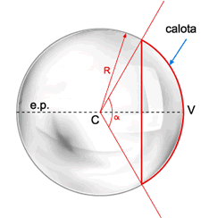
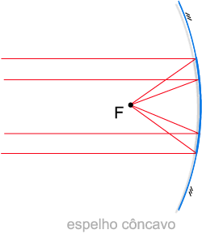
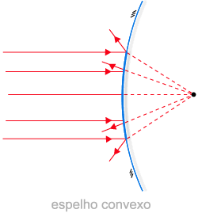
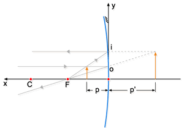

Sumário
Espelhos
Vamos começar pela definição de espelho, que é:
- Espelho: são objetos que não absorvem luz, somente refletindo os raios que chegam a sua superfície. Existem espelhos planos e esféricos, sendos os esféricos divididos em côncavos e convexos.
Os espelhos são dividos em dois tipos, planos e esféricos, que são definidos por:
- Espelho Plano: São superfícies planas que refletem os raios de luz de maneira a criar uma imagem idêntica, mas com uma inversão entre esquerda e direita. A distância do objeto ao espelho será igual à distância da imagem ao espelho e a altura do objeto será igual a da imagem.
-
Espelho Esférico: Nos espelhos esféricos os angulos de incidencia e de reflexão
são equivalentes. Os outros elementos têm características diferentes em espelhos côncavos
e convexos.
CÔNCAVOS: Superfície é a parte interna da esfera
CONVEXOS: Superfície refletora é a externa da esfera
Aspectos geométricos de espelhos esféricos
Para o estudo dos espelhos esféricos é útil o conhecimento dos elementos que os
compõem, esquematizados na figura abaixo:

Elementos que compõem um Espelho Esférico
Na imagem podemos ver os seguintes elementos:
- C é o centro da esfera;
- V é o vértice da calota;
- O eixo que passa pelo centro e pelo vértice da calota é chamado eixo principal.
- As demais retas que cruzam o centro da esfera são chamadas eixos secundários.
- O ângulo , que mede a distância angular entre os dois eixos secundários que cruzam os dois pontos mais externos da calota, é a abertura do espelho.
- O raio da esfera R que origina a calota é chamado raios de curvatura do espelho.
Foco dos Espelhos Esféricos
Para os espelhos côncavos de Gauss, pode-se verificar que todos os raios
luminosos que incidem ao longo de uma direção paralela ao eixo secundário
passam por (ou convergem para) um mesmo ponto F, o foco principal do espelho.

Foco de um Espelho Côncavo
No caso dos espelhos convexos, a continuação do raio refletido é que passa pelo foco. Tudo se passa como se os raios refletidos se originassem do foco.

Foco de um Espelho Convexo
Para Calcularmos o número de imagens que serão vistas na associação, se usa a seguinte fórmula:
Equação fundamental dos Espelhos Esféricos

Elementos de um Espelho Esférico
Dadas a distância focal e posição do objeto, é possível determinar analiticamente a posição da imagem através da equação de Gauss, que é expressa por:
RESUMÃO
Chegou a hora de fazer o Resumão! Para isso, aqui vão algumas dicas para você fazer o seu de forma completa e saber tudo sobre os conceitos do Espelhos:
- Tente se lembrar dos componentes de um espelho. Faça seus desenhos ou gráficos para lhe ajudar. Como nessa imagem
- Uma informação importante também é identificar um espelho côncavo e convexo. Sendo o Côncavo curvado para dentro e Convexo curvado para fora. Como nesse tópico
- As duas equações que precisam ser lembradas são, a do número de imagens e a equação de Gauss.
Refêrencias